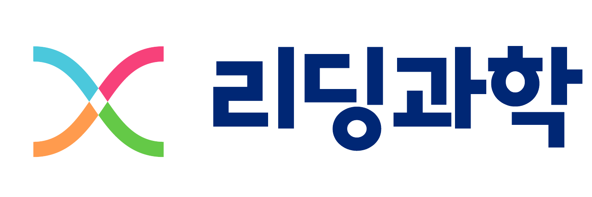
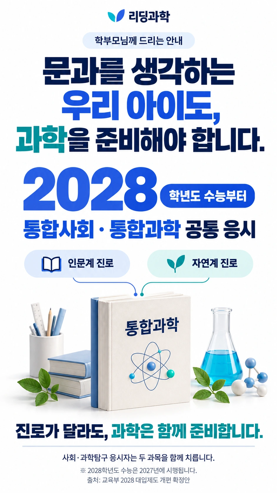
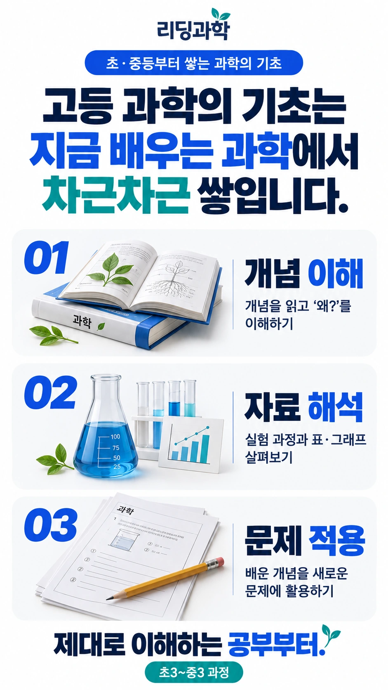
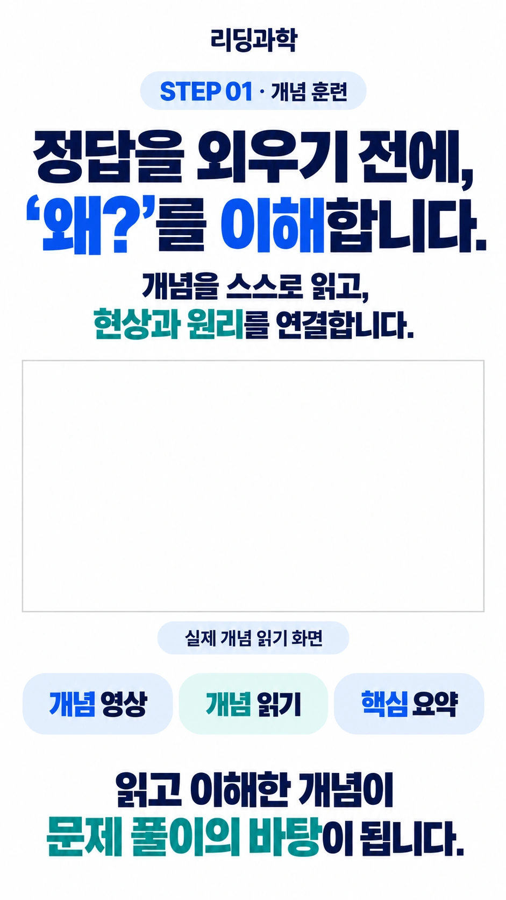
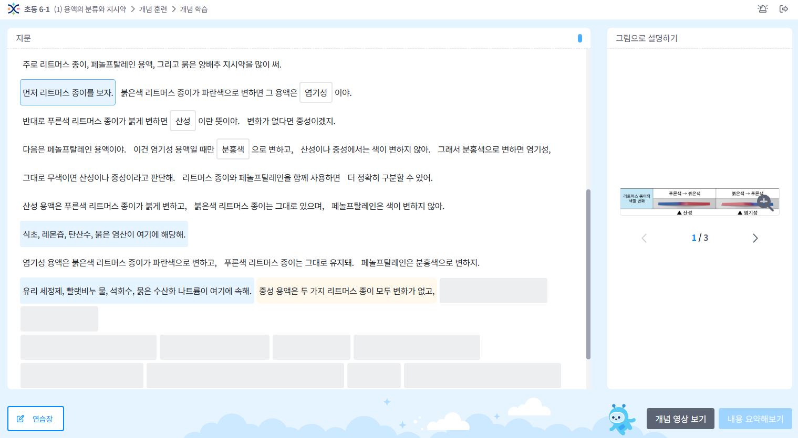
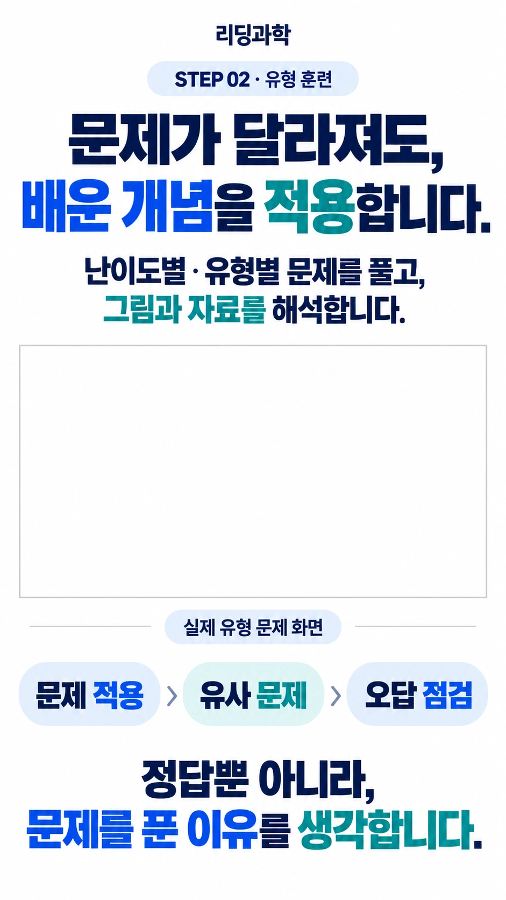
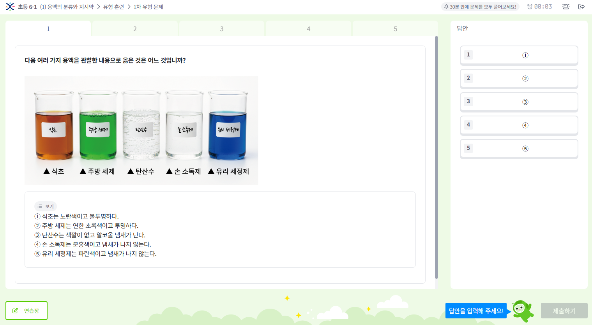
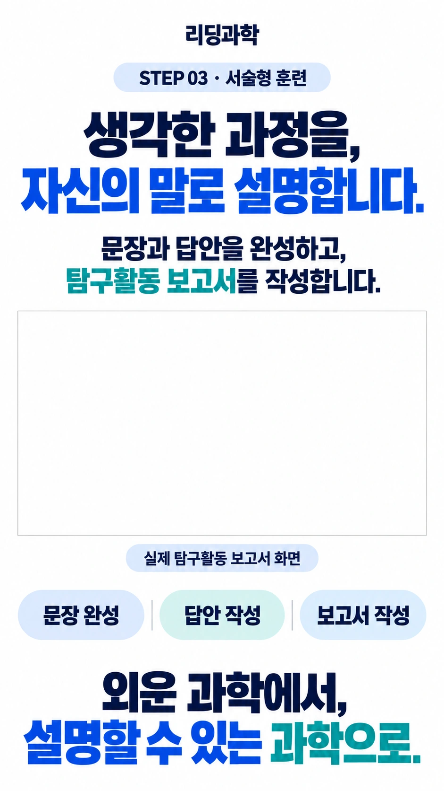
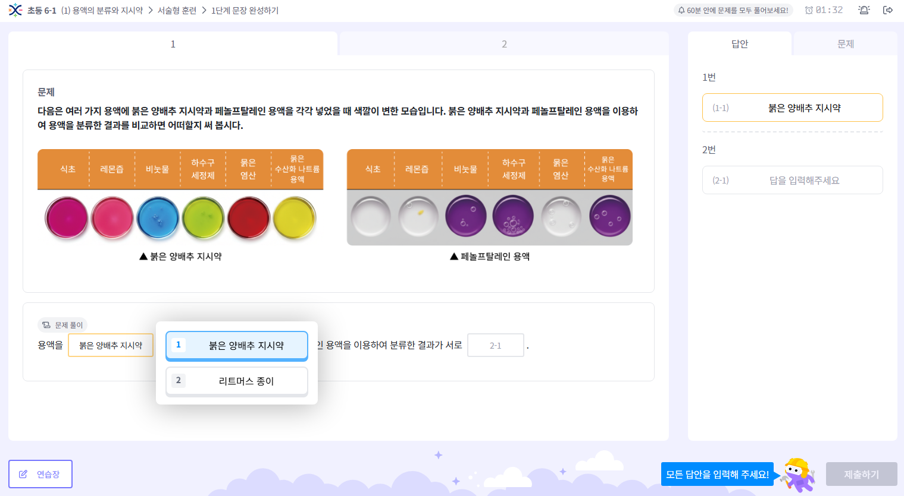
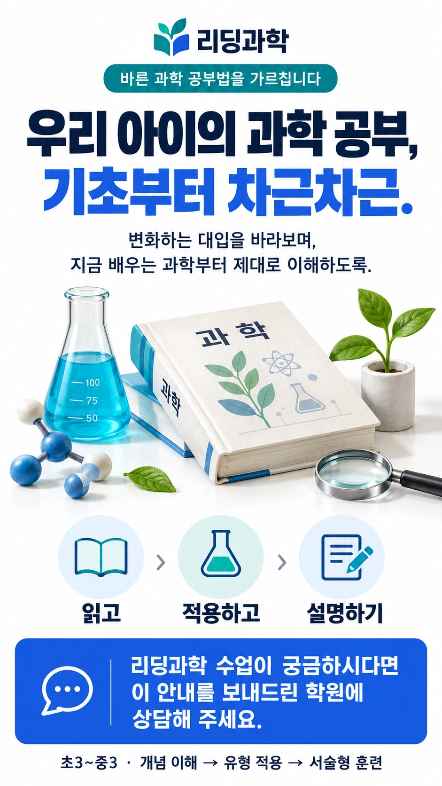

학원용 홍보 링크 만들기
학원명과 상담 연락처를 입력하세요. 학부모님께 보낼 전용 링크가 바로 만들어집니다.
학부모님께 보낼 링크
리딩과학: 2028학년도 수능 변화와 우리 아이의 과학 공부



리딩과학의 3단계 학습
개념을 이해하고,
적용하고, 설명합니다.
아래에서 각 단계의 학습 방법과 실제 화면을 자세히 살펴보세요.
STEP 1개념 훈련읽고 이해하기
STEP 2유형 훈련문제에 적용하기
STEP 3서술형 훈련근거로 설명하기
01
3단계 학습 · 1단계 상세 안내
STEP 1 · 개념 훈련
1 개념2 유형3 서술형


화면 확대02
3단계 학습 · 2단계 상세 안내
STEP 2 · 유형 훈련
1 개념2 유형3 서술형


화면 확대03
3단계 학습 · 3단계 상세 안내
STEP 3 · 서술형 훈련
1 개념2 유형3 서술형


화면 확대실제 서술형 문장 완성 화면

리딩과학 수업 상담
수업 일정과 학습 과정은 학원에 문의해 주세요.
전화로 상담하기